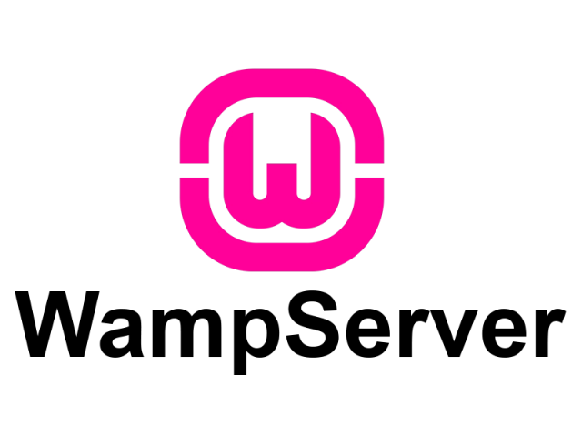
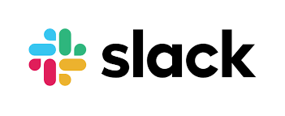
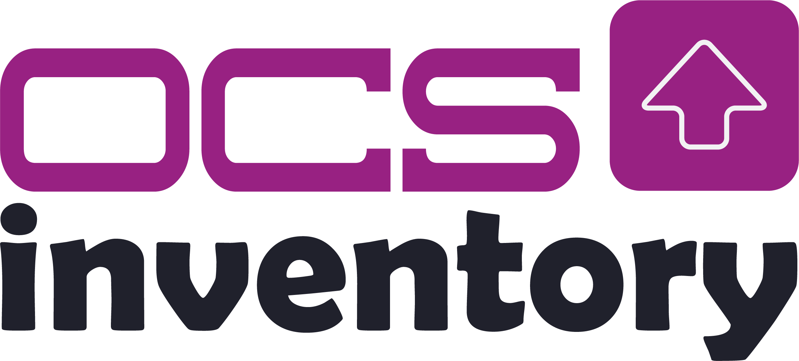
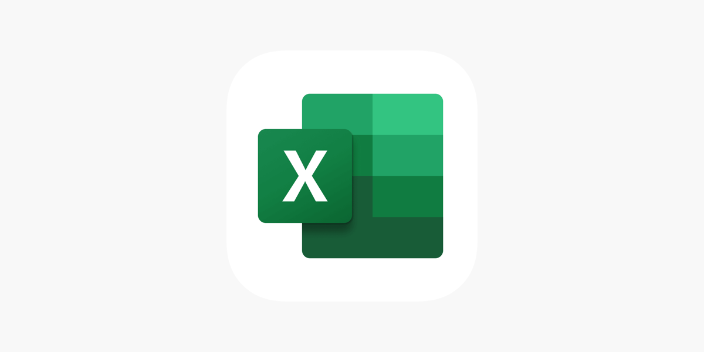
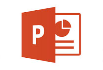
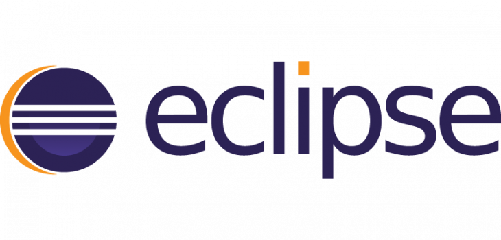

💻 Compétences
Voici mes compétences en informatique, couvrant les systèmes d'exploitation, les réseaux, la virtualisation et le développement.
Langages Pratiqués


Outils / Logiciels Utilisés

- 


- 


- 
- 
- 
- 
Réseau
🖥️ Systèmes d'exploitation
- 🐧 Linux : Système open source pour serveurs et infrastructures.
- 🪟 Windows : Système propriétaire de Microsoft, dominant sur les PC.
- 📱 Android : OS mobile open source développé par Google.
🌐 Réseau
- 📡 Protocoles : Règles définissant la communication réseau (ex : TCP/IP).
- 📍 Adressage : Attribution d’adresses IP uniques aux appareils.
- 🚦 Routage : Sélection du chemin optimal pour l’envoi des données.
🖥️ Virtualisation
- 🖥️ Virtualisation : Exécution de plusieurs systèmes sur une seule machine.
- 🔧 VirtualBox : Outil permettant de créer et gérer des machines virtuelles.
Certifications
Au cours de mon cursus, j'ai obtenu plusieurs certifications listées ci-dessous.